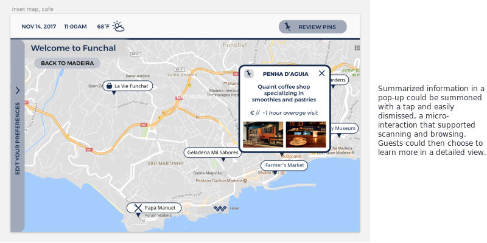

Creating personalized guest experiences
Travelers seek out recommendations to find the experiences that best suit their interests, but not all recommendations are seen as equal. There’s opportunity for hotels to offer recommendations to improve the guest experience, but keeping those recommendations authentic will be a challenge.Feeling like a local
Many travelers value autonomy, but they also want to feel that they have the information and support they need. Travelers appreciate feeling a sense of belonging, even when visiting a different country or culture.Connecting visitors to locals and other visitors
Travelers enjoy meeting locals, both through service encounters and chance meetings. Unexpected encounters are often the best things about a trip, and hotels can design opportunities for people to meet.Visioning workshop
We designed a structured visioning workshop to transform our research into ideas. In preparation, we brainstormed a list of prompts based on our opportunity areas, which we then used to guide a series of rapid-fire design sprints. We adopted a "yes, and" improv strategy to fill out and collate our favorite ideas, and abstracted them into themes we could continue to explore.Two concepts really excited us: Connecting guests to unique activities and featuring employees as locals and experts. We first explored the two concepts separately, imagining how each of them could deliver value for guests and employees. Then we began experimenting with ways to combine these two concepts in one final design.

From ideas to storyboards
Next we considered what these themes could look like in context and constructed more refined narratives around them. Storyboards are an effective method to both explore options among teammates and illustrate to stakeholders how they could play out. We began to organize them for presentation to our client, loosely binding the ideas to value propositions and sample tech implementations. Collectively we strategized to pursue two design directions in succession with a series of iterative prototypes: One guest-facing and one staff-facing.Please click here to see some of my musings and rough storyboard sketches.
We created wireframes of how the system might look, allowing users to choose among staff-recommended activities, personalized recommendations, context-aware recommendations, and recommendations drawn from other guests’ experiences.
After mocking up a rough idea of our prototype experience, we came up with a research protocol. For the first round of rapid testing, considering our time constraints, we determined to recruit a sample of convenience from our extended networks: Subjects who were traveling or travel frequently. We designed a test that fell somewhere between a thinkaloud and an interview: First we would present a scenario, introduce the prototype, ask the research subject to guide us through his or her use of the prototype, and finally follow up with probing questions for qualitative responses.
After finalizing our rough paper prototype, we wireframed it in Figma. The artifact remained very low-fidelity and captured the character of a paper prototype, but we wanted it to be digitized so we could conduct remote interviews.
Insights
- Travelers want to see the map
“First I’d make a list of everthing that looks interesting, then I’d see where everything is so I can see what I can do in a day.” - Giving users greater control over their experience may help to build trust
“I think I would rather set my own preferences so that I see the stuff I really want to see, not what the system wants me to see.”
- Recommendations from local staff members are highly appealing
“Oh, I bet she would know some really good places to eat. I never trust TripAdvisor for food recommendations.” - We can help travelers assess recommendations by
providing narrative details and contextual information about the recommender
“When I look online, I make sure to read blog posts and look at pictures of the people doing it. That way I can figure out if we’re like-minded.”
First we met with staff and conducted interviews to gauge their interest in sharing recommendations.
We found that guest-facing staff members genuinely enjoyed sharing and connecting with guests and were interested in tools that could make this kind of connection easier.We then ran a co-design session with three staff members to find out what they feel comfortable sharing with guests.
Our staff content collaboration exercise was both an experience prototype and a co-design activity. First the staff members filled out a survey asking them questions that would be used to create their profiles. Their results went into InDesign mock-ups which were then shown to the staff and used to ideate around what kind of content might go into these profiles.Finally, we asked staff members to supply recommendations and create profile content over a five-day diary study in the hotel.
This served as a paper prototype for the onboarding process with our system. At the end, we were blown away by the quality of the recommendations and the eagerness of staff members to provide their own pictures and correct any errors in their content.To conduct these tests, we held “office hours” in the hotel during the morning breakfast rush and in the afternoon when guest return to the hotel. During these times, one of us would set up in either the lobby or the breakfast area and offer guests the opportunity to try the prototype. We conducted think-aloud testing with a total of 7 guests over the 3-day period. These sessions lasted anywhere from 5-45 minutes, and the average session length was 22.5 minutes.
After the test was completed, we held debrief interviews with staff members to get their thoughts on the prototype and to learn about the experience of having their content featured.
Our task prompt was simple: “Find something you’re interested in doing.” We found that the staff-featuring prototype, which was text-rich and personal, supported lingering over an extended period to discover the island’s offerings and employees’ expert preferences. When the entry-point was a map, users navigated quickly, driven by their personal interest, geographic/scenic appeal, and logistics. Users found value in both experiences. Furthermore, we confirmed that users find it important to have an artifact to save and take with them: We observed our users softly repeating the names of recommendations they wanted to remember.


Guest insights
Overall, users derived a lot of value from the prototypes
“You just inspired my day! Thanks a lot!”All three forms of content presentation — host profiles, a map-based interface, and a category-based interface — were useful to guests
Guest seemed to prefer exploring the profiles and categories when looking for something to do, but preferred the map-based interface when they already had an idea of what they wanted.Some users were skeptical of hotel recommendations, but were won over by the personal voices of the staff members
“You can see that it’s honest and that it’s a personal opinion, not the hotel’s opinion.”It encouraged staff and guest interactions
After testing, one guest said to a reception staff member, “I didn’t know you collected sugar packets!”, which led to a short conversation.Staff insights